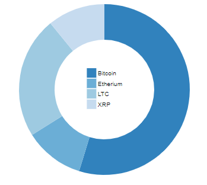
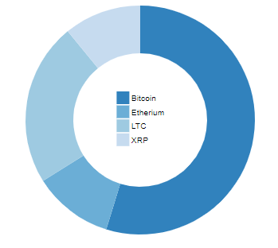

Cryptocurrencies are a type of digital currency that work as a medium of exchange. The most commonly known cryptocurrency is Bitcoin which was created in 2009. Cryptocurrencies have decentralized control which work use blockchain. Blockchain is a type of cryptography which allows for secure transactions to control the creation of units and verify the transfer of assets(source: https://en.wikipedia.org/wiki/Cryptocurrency).
Over the past year, cryptocurrencies have undergone a surge in popularity. The graphic below daily volume traded for numerous cryptocurrencies. As you can see, a significant surge in trading began in late may and this uptick has continued on.

 
